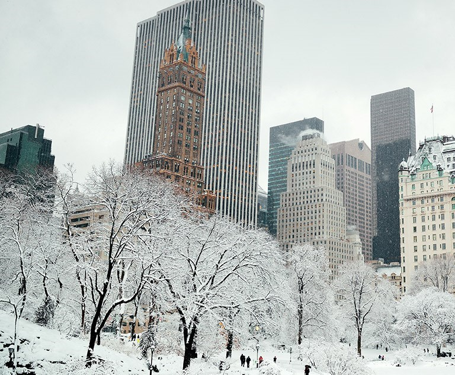
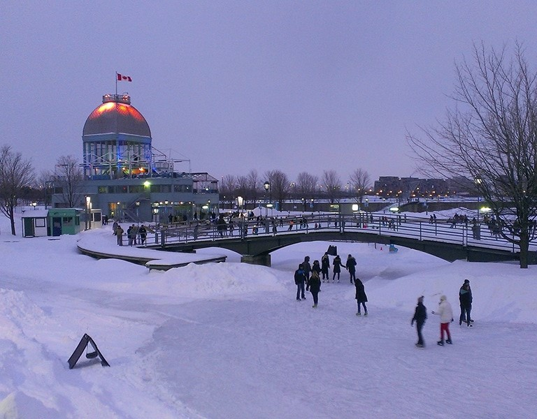

O Inverno é também uma excelente altura para visitar os muitos mercados de férias da Croácia. Os mercados de férias na Croácia são um óptimo local para encontrar presentes únicos para amigos e familiares.

inverno nos Estados Unidos é uma das épocas mais lindas, e charmosas do país.Em muitas cidades, a paisagem coberta de neve e as temperaturas baixastornam as experiências dos turistas ainda mais incríveis.
O Inverno é também uma excelente altura para visitar os muitos mercados de férias da Croácia. Os mercados de férias na Croácia são um óptimo local para encontrar presentes únicos para amigos e familiares.
Quando a neve começa a cair, o país se transforma em uma terra mágica repleta de atrações.Com paisagens cobertas de branco, estações de esqui de classe mundial, festivais animados e belas cidades sob a neve.
